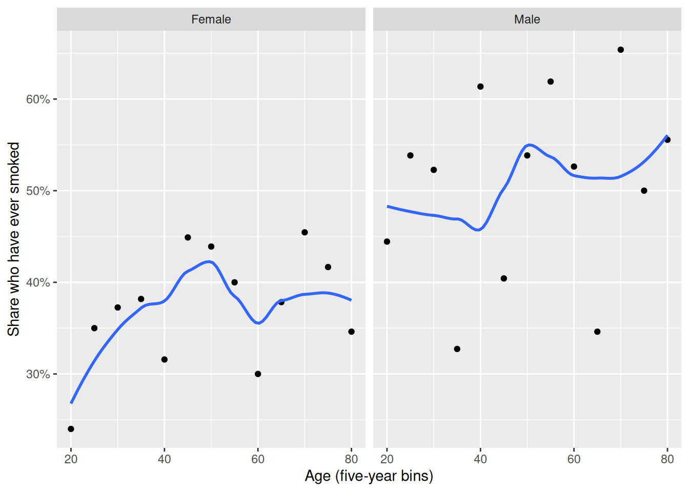
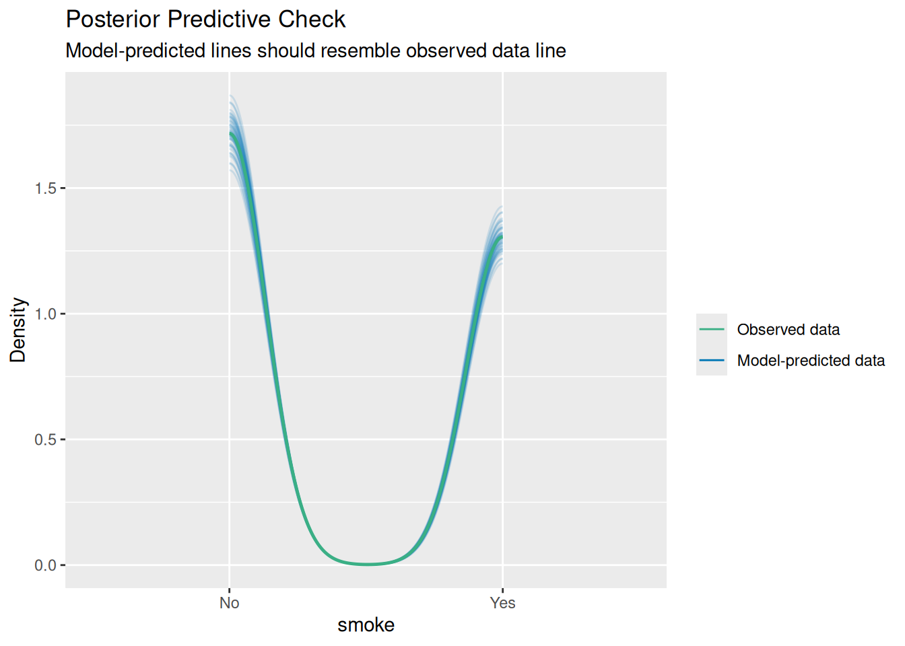
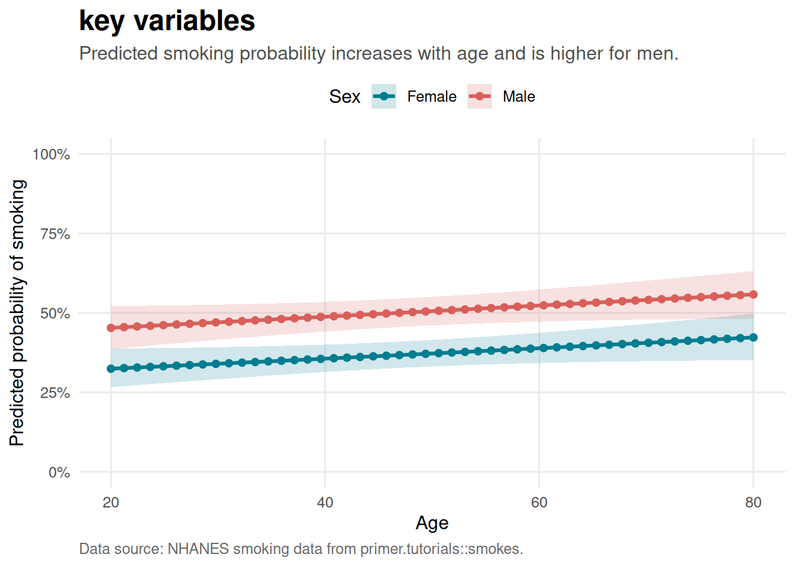

`geom_smooth()` using method = 'loess' and formula = 'y ~ x'
Our topic is how smoking status in adults can be predicted from certain variables. Using NHANES data from late 200s we look to predict difference in smoking trends between 30 yr old women and 70 year old plus men. One potential weakness in the model is that its off self reported data, so adults may not be answering honestly regarding smoking status, they may forget. Validity breach
`geom_smooth()` using method = 'loess' and formula = 'y ~ x'
parsnip model object
Call: stats::glm(formula = smoke ~ age + sex, family = stats::binomial,
data = data)
Coefficients:
(Intercept) age sexMale
-0.874524 0.007037 0.544611
Degrees of Freedom: 999 Total (i.e. Null); 997 Residual
Null Deviance: 1368
Residual Deviance: 1347 AIC: 1353The model has an integer or a discrete response variable.
It is recommended to switch to a dot-plot style, e.g.
`plot(check_model(model), type = "discrete_dots"`.Ignoring unknown labels:
• size : ""
# A tibble: 3 × 7
term estimate std.error statistic p.value conf.low conf.high
<chr> <dbl> <dbl> <dbl> <dbl> <dbl> <dbl>
1 (Intercept) -0.875 0.207 -4.22 0.0000241 -1.28 -0.471
2 age 0.00704 0.00387 1.82 0.0694 -0.000550 0.0147
3 sexMale 0.545 0.129 4.22 0.0000245 0.292 0.798 | Term | Estimate | Std. Error | Statistic | p-value | Lower 95% CI | Upper 95% CI |
|---|---|---|---|---|---|---|
| (Intercept) | −0.875 | 0.207 | −4.223 | 0.000 | −1.283 | −0.471 |
| age | 0.007 | 0.004 | 1.816 | 0.069 | −0.001 | 0.015 |
| sexMale | 0.545 | 0.129 | 4.220 | 0.000 | 0.292 | 0.798 |
Used a logit regression model to predict smoking status based on age and sex of an adult
Estimate Pr(>|z|) S 2.5 % 97.5 % age sex
0.340 < 0.001 27.1 0.291 0.392 30 Female
0.406 0.00219 8.8 0.348 0.466 70 Female
0.470 0.29664 1.8 0.415 0.526 30 Male
0.541 0.19845 2.3 0.479 0.601 70 Male
Type: invlink(link)
Estimate Std. Error z Pr(>|z|) S 2.5 % 97.5 %
0.133 0.0311 4.27 <0.001 15.6 0.0716 0.193
Term: sex
Type: response
Comparison: Male - FemaleWe estimate that a 70-year-old man has a probability of about 54% of being an ever-smoker, compared to about 34% for a 30-year-old woman — a gap of roughly 20 percentage points